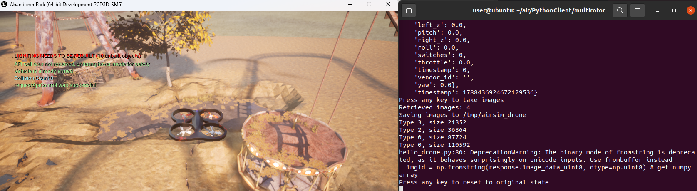

建立虚拟机和空域载具之间的连接
建立 Python 虚拟环境
-
安装 miniconda
# 切换到主目录 cd ~ # 下载 miniconda 安装包 wget https://repo.anaconda.com/miniconda/Miniconda3-latest-Linux-x86_64.sh # 默认路径安装（用户主目录下） bash Miniconda3-latest-Linux-x86_64.sh -b # 将 miniconda 添加到 PATH echo 'export PATH="~/miniconda3/bin:$PATH"' >> ~/.bashrc && source ~/.bashrc # 验证 miniconda 安装成功，显示：conda 26.7.1 conda --version -
新建虚拟环境
conda create -n nn_3.8 python=3.8 -y conda activate nn_3.8
注意：
如果新建运行环境过程中报错：“CondaToSNonInteractiveError: Terms of Service have not been accepted for the following channels.”，是因为没有接受服务条款，运行以下命令可解决。
conda tos accept --override-channels --channel https://repo.anaconda.com/pkgs/main
conda tos accept --override-channels --channel https://repo.anaconda.com/pkgs/r如果执行conda activate时报错：CondaError: Run 'conda init' before 'conda activate'
原因：其实conda activate不是一个独立的可执行程序，而是一个由 shell 函数实现的“伪命令”。这意味着它不能像普通命令那样直接运行——必须先让 shell “认识”这个函数。
解决方法：
conda init bash
# 立即重载配置
source ~/.bashrc
# 进入 (base) 环境建立与 AirSim 的连接
运行模拟器：
cd AbandonedPark/WindowsNoEditor/
AbandonedPark.exe
# 拉取示例仓库
git clone https://github.com/OpenHUTB/ros2.git
cd ros2/src/
# 安装模拟器客户端
pip install numpy
pip install msgpack-rpc-python
pip install airsimgit clone https://github.com/OpenHUTB/air.git
cd air/PythonClient/multirotor/
# 其中 --host 后面是宿主机的 ip 地址，通过命令（ipconfig）进行查看
python hello_drone.py --host 172.21.108.47